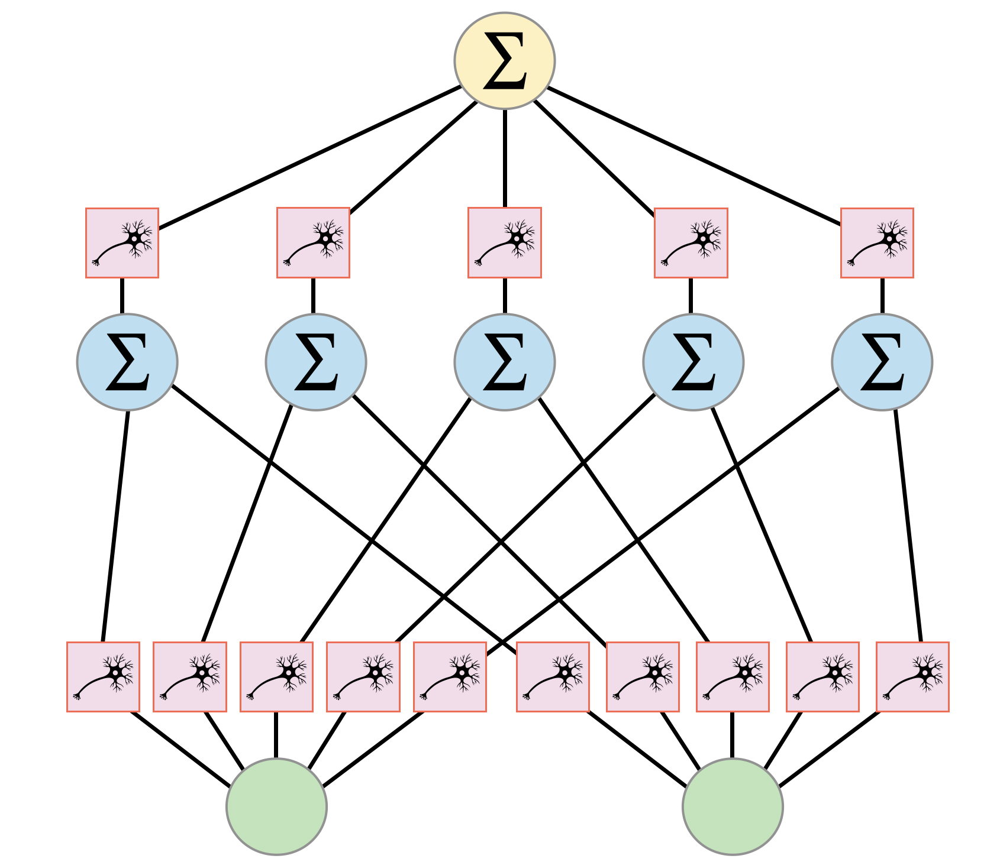

KAN
Kolmogorov-Arnold Representation Theorem (KART)
KART promises that any multivariate continuous function \(f(x_1, \ldots, x_N)\) can be represented as a finite composition of univariate functions and addition:
where \(\phi_{q,p} : [0,1] \rightarrow \mathbb{R}\) and \(\Phi_q : \mathbb{R} \rightarrow \mathbb{R}\) are continuous functions. Though KART provides theoretical guarantees of universal approximation, the inner and outer functions can be non-smooth or hard to learn in practice. We need to find a better way to approximate these functions with smooth and learnable ones.
Kolmogorov-Arnold Network (KAN)
Liu et al. introduced KANs as a practical realization of the KART, generalizing it to deep and wide architectures. Each variational activation function in KANs is modeled as a learnable function parameterized by B-splines, which are piecewise polynomial functions capable of approximating any continuous function with arbitrary precision.
Formally, a KAN layer maps the output of the \(\ell\)-th layer to the \((\ell+1)\)-th layer via:
where \(\phi_{\ell,j,i}\) is the learnable univariate variational activation function connecting input node \(i\) to output node \(j\). This can be expressed in matrix notation as:
The KAN is a composition of \(L\) KAN layers: given input \(\boldsymbol{x}\), we’ll have KAN output as:
By contrast, a multilayer perceptron (MLP) is given by linear layers \(W\) and nonlinear activation functions \(\sigma\) as:
The following figure illustrates the KAN architecture, where each node (neuron scheme) in the network represents a variational activation function \(\phi_{\ell,j,i}\) that connects inputs to outputs across layers. 
Training KAN
Here is a simple example of how to train a KAN from QKAN package:
[1]:
import torch
from tqdm import tqdm
from qkan import KAN, create_dataset
device = "cuda" if torch.cuda.is_available() else "cpu"
f = lambda x: torch.sin(20 * x) / x / 20 # J_0(20x)
dataset = create_dataset(
f, n_var=1, ranges=[0, 1], device=device, train_num=1000, test_num=1000, seed=0
)
model = KAN(
[1, 1],
grid_size=10,
device=device,
)
optimizer = torch.optim.Adam(model.parameters(), lr=1e-1)
loss_fn = torch.nn.MSELoss()
[2]:
steps = 100
pbar = tqdm(range(steps), ncols=100)
model.train()
for _ in pbar:
optimizer.zero_grad()
pred = model.forward(dataset["train_input"])
loss = loss_fn(pred, dataset["train_label"])
loss.backward()
optimizer.step()
pbar.set_description(f"loss: {loss.item():.4f}")
model.eval()
with torch.no_grad():
pred = model.forward(dataset["test_input"])
loss = loss_fn(pred, dataset["test_label"])
print(f"Test loss: {loss.item():.4f}")
loss: 0.0031: 100%|██████████████████████████████████████████████| 100/100 [00:00<00:00, 735.03it/s]
Test loss: 0.0032
Further Reading
To understand KANs in more detail, the reader can refer to the original paper: “KAN: Kolmogorov-Arnold Networks”.
And pykan documentation: https://kindxiaoming.github.io/pykan/index.html